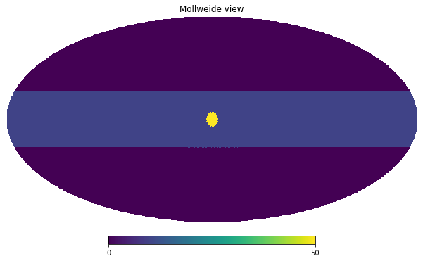

import healpy as hp
import numpy as np
import os
import astropy.units as u
import matplotlib.pyplot as plt
hp.disable_warnings()
%matplotlib inlineIn this notebook we will explore different ways of rotating maps in healpy.
Create an input map
We simulate a simple galactic plane like horizontal band and a strong source at the galactic center.
nside = 128
m = np.zeros(hp.nside2npix(nside))gal_width = 20 * u.deggalaxy_plane_pixels = hp.query_strip(nside, np.pi/2 - gal_width.to_value(u.radian),
np.pi/2+ gal_width.to_value(u.radian))m[galaxy_plane_pixels] = 10source_vector = hp.ang2vec(theta=np.pi/2, phi=0)source_vectorarray([1.000000e+00, 0.000000e+00, 6.123234e-17])galactic_center_pixels = hp.query_disc(nside, source_vector, radius=(5*u.deg).to_value(u.radian))m[galactic_center_pixels] = 50hp.mollview(m)
We do not want to have sharp steps in the map, therefore we smooth it with a 5 degrees beam:
m_smoothed = hp.smoothing(m, fwhm=(5*u.deg).to_value(u.radian))hp.mollview(m_smoothed, title="Smoothed map")
hp.graticule();Rotation in plotting
The most common reason for applying a rotation is when we want to change reference frame, healpy supports Galactic, Ecliptic and Equatorial. If we just need it for plotting, we can use the coord keyword for all plotting functions, for example, “GC” converts the map from Galactic to Equatorial:
hp.mollview(m_smoothed, coord="GC")
hp.graticule();Instead if we want to specify a custom rotation, we can use the rot keyword. It accepts, longitute and latitude (in this order) in degrees, that point will be the center of the new reference frame. So instead if we want to move the source at the galactic center to Longitude 10 and Latitude 20, see the red dot below:
hp.mollview(m_smoothed)
hp.projplot(10,20, 'ro', lonlat=True)
hp.graticule();We need to provide \(-10 ^{\circ}, -20 ^{\circ}\) to rot:
hp.mollview(m_smoothed, rot=[-10, -20])
hp.graticule();We can also provide a third argument to rot to rotate the orientation of the galactic plane:
hp.mollview(m_smoothed, rot=[-10, -20, 45])
hp.graticule();The same works for gnomview, we can center the map at the point specified by rot, then adjust the sky area with xsize and reso
hp.gnomview(m_smoothed, rot=[2, 6], xsize=2000, ysize=800, reso=2)
hp.graticule();Rotate the actual array
Instead if we need to do further processing to the map and rotate the actual array, we need to use a Rotator, it accepts the same argument we saw above:
rot_gal2eq = hp.Rotator(coord="GC")Let’s take as an example instead a custom rotator, let’s say that we want to move the source at the galactic center to the coordinates \(10 ^{\circ}, 20^{\circ}\).
The definition of rotation in healpy is that the point provided in rot will be the center of the map.
longitude = -10 * u.deg
latitude = -20 * u.deg
rot_custom = hp.Rotator(rot=[longitude.to_value(u.deg), latitude.to_value(u.deg)])and this works fine as expected:
rot_custom(-10, -20, lonlat=True)array([ 0.00000000e+00, -1.42108547e-14])However, this causes a small error for the rotation of \((0^\circ,0^\circ)\):
rot_custom(0, 0, lonlat=True)array([10.62758414, 19.68349808])The correct way of defining this rotation is to use \((10^\circ,20^\circ)\) and then specify the inv keyword to use the inverse transform:
longitude = 10 * u.deg
latitude = 20 * u.deg
rot_custom = hp.Rotator(rot=[longitude.to_value(u.deg), latitude.to_value(u.deg)], inv=True)It can also be used to rotate vectors:
rot_custom(0, 0, lonlat=True)array([10., 20.])Finally we can rotate the full map, there are 2 ways, either in spherical harmonics or pixel space. It is generally better to do the rotation in spherical harmonics space, because rotating in pixel space does interpolation so has a smoothing effect on the map, anyway it could be used in particular cases for example when the map is not full-sky.
They are both methods of the Rotator object, get the input map and return the rotated map:
m_smoothed_rotated_alms = rot_custom.rotate_map_alms(m_smoothed)m_smoothed_rotated_alms.max()47.4755560735065m_smoothed_rotated_pixel = rot_custom.rotate_map_pixel(m_smoothed)m_smoothed_rotated_pixel.max()47.38040671208857hp.mollview(m_smoothed_rotated_alms, title="Map rotated in spherical harmonics space")
hp.projplot(10,20, 'ro', lonlat=True)
hp.graticule();
hp.mollview(m_smoothed_rotated_pixel, title="Map rotated in pixel space")
hp.projplot(10,20, 'ro', lonlat=True)
hp.graticule();Compare rotation in spherical harmonics and pixel space
If we compare the maps, there is significant difference, we can rotate back and check the residuals with the two methods.
hp.mollview(m_smoothed_rotated_alms-m_smoothed_rotated_pixel, title="Difference between the 2 rotated maps")
hp.graticule();rot_custom_back = hp.Rotator(rot=[longitude.to_value(u.deg), latitude.to_value(u.deg)])hp.mollview(m_smoothed-rot_custom_back.rotate_map_alms(m_smoothed_rotated_alms), title="residuals after rotating back (Spherical Harmonics)")
hp.graticule();hp.mollview(m_smoothed-rot_custom_back.rotate_map_pixel(m_smoothed_rotated_pixel), title="residuals after rotating back (Pixel space)")
hp.graticule();There is a huge difference between the methods, check the scales of the colorbars, this is made worse by the fact that we are using pixels that are quite big, it wouldn’t be as bad with smaller pixels.